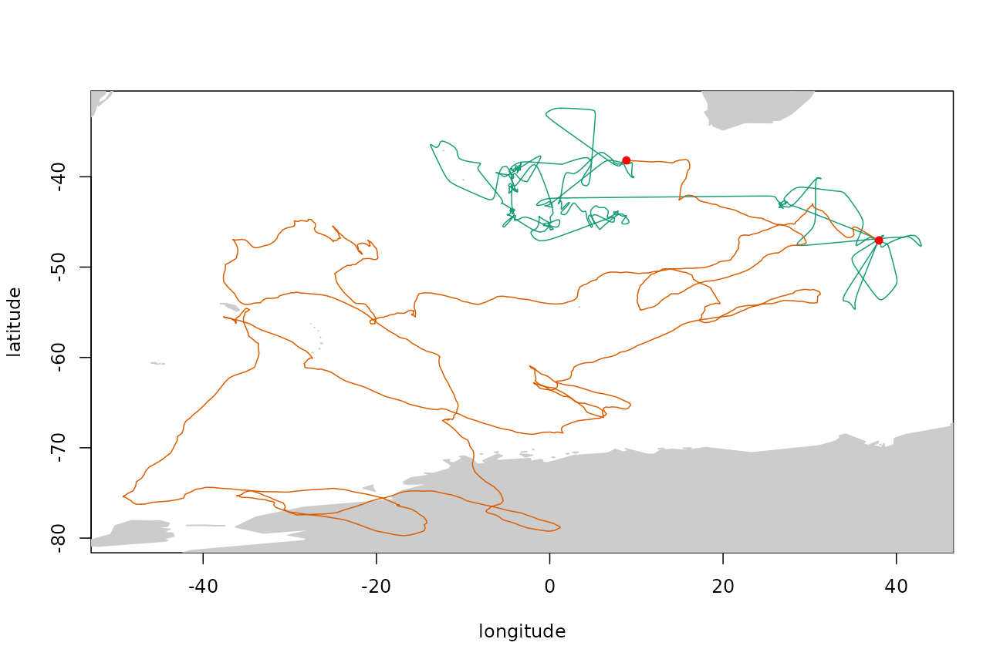
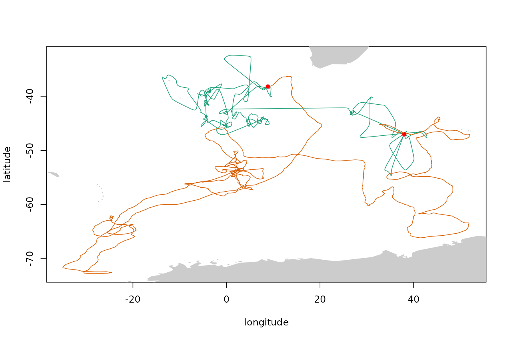
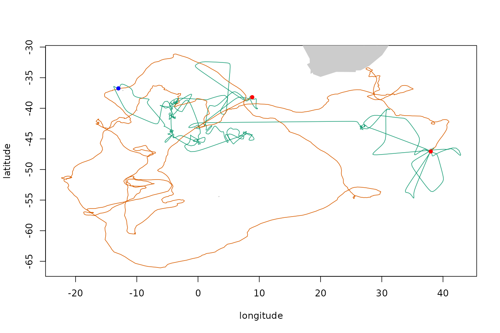

Simulating tracks with the availability package
Ben Raymond, Simon Wotherspoon, Ian Jonsen, Ryan Reisinger
2018-11-08
Source:vignettes/availability.Rmd
availability.RmdBackground
This package provides methods for estimating the geographic space available to an animal, based on an observed track collected by a GPS tag or similar. Broadly, these functions generate a simulated track that preserves certain properties of the original track. The simulated tracks can optionally be constrained by a land mask (or other mask that prevents the simulated track from visiting unwanted locations). It can also be forced to pass through fixed points at certain times, allowing (for example) simulated tracks to finish at the same point from which they started.
The simulated tracks only attempt to preserve basic properties of the observed track, such as the speeds exhibited by the animal and the overall track duration. The intention is not to explicitly reproduce behavioural states such as area-restricted searching. Rather, the goal is to estimate a plausible track that the animal might have produced, if it did not have any environmental or other preferences governing its movements. The geographic and environmental properties of the actual track can then be compared to those of simulated tracks, giving insights into the preferred habitats of the animal.
For application examples, see e.g. Raymond et al. (2015), Reisinger et al. (2018), Courbin et al. (2018), and Péron et al. (2018).
Usage examples
Load the availability package, and some others that we’ll use:
library(availability)
library(argosfilter)
library(crawl)
library(geosphere)
library(ggplot2)
set.seed(28)
cpal <- c("#1B9E77", "#D95F02", "#7570B3", "#E7298A", "#66A61E", "#E6AB02")Some helper functions used in this demo:
## helper function to fit a crawl model to PTT data
fit_crawl <- function(d, tstep = 3, smaxit = 100, attempts = 10) {
argos_errors <- data.frame(location_quality = c("3", "2", "1", "0", "A", "B"),
errX = log(c(1, 1.5, 4, 14, 5.21, 20.78)),
errY = log(c(1, 1.5, 4, 14, 11.08, 31.03)))
## merge argos error information into d
d <- merge(d, argos_errors)
## ensure time-ordering
d <- d[order(d$date), ]
## apply an initial speed filter
d$filt <- sdafilter(lat = d$decimal_latitude, lon = d$decimal_longitude, dtime = d$date,
lc = d$location_quality, vmax = 5, ang = c(15, 25),
distlim = c(2500, 5000))
d <- d[d$filt != "removed", ]
initial.state <- list(a1.x = c(d$decimal_longitude[1], 0),
a1.y = c(d$decimal_latitude[1], 0),
P1.x = diag(c(0.001, 0.001)), P1.y = diag(c(0.001, 0.001)))
## Repeatedly attempt to fit model.
fit <- list(data = d, fn.args = list(tstep = tstep, smaxit = smaxit, attempts = attempts))
for(i in seq_len(attempts)) {
fit$crawl <- try(crwMLE(mov.model = ~1, err.model = list(x = ~errX, y = ~errY),
stop.model = ~land, data = d,
coord = c("decimal_longitude", "decimal_latitude"),
polar.coord = FALSE, Time.name = "date",
initial.state = initial.state, initialSANN = list(maxit = smaxit)),
silent = TRUE)
if(!inherits(fit$crawl, "try-error")) break
}
if(inherits(fit$crawl, "try-error")) {
stop("failed to fit crawl model")
} else {
## interpolate to positions every tstep hours
predTime <- seq(min(d$date), max(d$date), tstep*3600)
predObj <- crwPredict(object.crwFit = fit$crawl, predTime = predTime, speedEst = TRUE,
flat = TRUE)
fit$pred <- data.frame(date = predTime, predObj[predObj$locType == "p", ])
}
fit
}
## this function converts the fit object returned by our crawl helper into the "template track"
## format used by the availability package routines
templateTrack <- function(fit) {
pr <- fit$pred
pr <- pr[pr$locType=="p", ]
list(ts = pr$date, xs = as.matrix(pr[, c("mu.x", "mu.y", "nu.x", "nu.y")]))
}
## simple helper to plot tracks
plotTracks <- function(..., pal = cpal) {
require(maptools)
data(wrld_simpl)
trks <- list(...)
xlim <- do.call(range, lapply(trks, function(trk) trk[, 1]))
ylim <- do.call(range, lapply(trks, function(trk) trk[, 2]))
plot(xlim, ylim, type = "n", xlim = xlim, ylim = ylim, xlab = "longitude", ylab = "latitude")
for (k in seq(from = floor((min(xlim)+180)/360), to = floor((max(xlim)+180)/360), by = 1))
plot(elide(wrld_simpl, shift = c(k*360, 0)), col = "grey80", border = "grey80",
add = TRUE, xlim = xlim, ylim = ylim)
for(k in seq_along(trks)) lines(trks[[k]], col = pal[k])
}Sooty Albatross
The track of a sooty albatross from the Prince Edwards Islands, from Reisinger et al. (2018). First pass the data through crawl to produce a filtered track with evenly-sampled 3-hourly time steps:
data(ptt_data)
time_step <- 3
fit <- fit_crawl(ptt_data$DMS, tstep = time_step)Extract the filtered track and show the first few rows:
tp <- templateTrack(fit)
head(tp$xs)## mu.x mu.y nu.x nu.y
## 1 37.99109 -47.05000 0.46741963 0.10354427
## 4 38.63050 -47.33072 0.05225392 -0.06927612
## 10 38.71572 -47.33594 0.02977198 0.02300072
## 16 38.96142 -47.45399 0.05696371 -0.09288884
## 18 39.10650 -47.76929 0.04315302 -0.11425005
## 19 39.22747 -48.12720 0.03821439 -0.12306425Plot the raw (magenta) and filtered (green) versions of the track:
plotTracks(ptt_data$DMS[, c("decimal_longitude", "decimal_latitude")], tp$xs,
pal = cpal[c(4, 1)])
Simulating a track by the VAR method
Fit a vector-autoregressive movement model to this filtered track. This model assumes that the x- and y-speeds at time t are a linear function of the speeds at time t-1, plus random noise.
arfit <- surrogateARModel(tp$xs)Now we can use that fitted model to generate new tracks. By default, the end points of the simulated track are fixed to the same start and end points as the original track, and no land mask is applied:
trkar <- surrogateAR(arfit,tp$xs,tp$ts)Plot the original filtered track (green), simulated track (orange), and track end points (red dots).
plotTracks(tp$xs, trkar$xs)
points(tp$xs[c(1, nrow(tp$xs)), 1:2], pch = 16, col = "red")
Simulating a track by the crawl method
Alternatively, we can use the movement model fitted by crawl to directly simulate a new track with the same movement properties:
model <- surrogateCrawlModel(fit$crawl, 3)
trkcrw <- surrogateCrawl(model, tp$xs, tp$ts)
plotTracks(tp$xs, trkcrw$xs, pal = cpal[c(1, 3)])
points(tp$xs[c(1, nrow(tp$xs)), 1:2], pch = 16, col = "red")
Comparison of simulated tracks to the observed track
The speed distributions of the three tracks can be compared directly:
step_len <- function(z) distVincentyEllipsoid(z[-nrow(z), 1:2], z[-1, 1:2]) / 1e3
temp <- data.frame(speed = step_len(tp$xs) / time_step, track = "Observed")
temp <- rbind(temp, data.frame(speed = step_len(trkar$xs) / time_step, track = "AR"))
temp <- rbind(temp, data.frame(speed = step_len(trkcrw$xs) / time_step, track = "Crawl"))
ggplot(data = temp, aes(x = speed, fill = track)) + geom_histogram(binwidth = 0.5) +
facet_grid(track~.) + scale_x_continuous(breaks = seq(from = 0, to = 60, by = 5)) +
xlab("Speed (km/h)") + scale_fill_manual(values = cpal)
The observed track appears to have a number of segments with slow speeds (see the peak in the histogram at around 3 km/h, possibly related to area-restricted searching), superimposed on a broad distribution of speeds up to about 35 km/h. There is also a peak in the histogram at around 15 km/h, but this looks suspiciously like an artefact arising from the interpolation of the raw track positions.
Simulating tracks: land masking
By default, the end points of the simulated track are fixed to the same start and end points as the original track, and no land mask is applied. A land mask can be applied via the point.check argument. For example, using the land mask supplied with the package:
trkar <- surrogateAR(arfit, tp$xs, tp$ts, point.check = gshhsMask())
plotTracks(tp$xs, trkar$xs)
points(tp$xs[c(1, nrow(tp$xs)), 1:2], pch = 16, col = "red")
The point.check argument accepts a function of the form function(tm, pt) that returns TRUE if the point should be accepted and FALSE if not. Note that this function can accept a time coordinate as well as a location, and so the mask can be made time-varying if required (e.g. dynamically masking out areas covered by sea ice).
Simulating tracks: fixing points
By default, the first and last points of the simulated track are fixed to match those of the template track. These fixed points can be removed, or other fixed points enforced, via the fixed parameter. (For the AR method, the first point must always be fixed.)
Fix an additional arbitrary point on the path (indicated by the blue point on the plot):
fixed <- logical(nrow(tp$xs))
fixed[1] <- fixed[nrow(tp$xs)] <- fixed[750] <- TRUE
trkar <- surrogateAR(arfit, tp$xs, tp$ts, fixed, point.check = gshhsMask())
plotTracks(tp$xs, trkar$xs)
points(tp$xs[c(1, nrow(tp$xs)), 1:2], pch = 16, col = "red")
points(tp$xs[750, 1], tp$xs[750, 2], pch = 16, col = "blue")
Repeat but do not fix final endpoint:
fixed <- logical(nrow(tp$xs))
fixed[1] <- fixed[750] <- TRUE
trkar <- surrogateAR(arfit, tp$xs, tp$ts, fixed, point.check = gshhsMask())
plotTracks(tp$xs, trkar$xs)
points(tp$xs[c(1, nrow(tp$xs)), 1:2], pch = 16, col = "red")
points(tp$xs[750, 1], tp$xs[750, 2], pch = 16, col = "blue")
Elephant Seal
Elephant seal data from Reisinger et al. (2018).
fit <- fit_crawl(ptt_data$SES, tstep = time_step)
tp <- templateTrack(fit)Use the fitted model to determine parameters and generate new path fixing both ends, and using a land mask:
model <- surrogateCrawlModel(fit$crawl, 3)
trkcrw <- surrogateCrawl(model, tp$xs, tp$ts, point.check = gshhsMask())Also simulate using the AR method:
model <- surrogateARModel(tp$xs)
trkar <- surrogateAR(model, tp$xs, tp$ts, point.check = gshhsMask())Compare the tracks (original track in green, crawl-simulated track in orange, AR-simulated track in purplish-indigo-whatever):
plotTracks(tp$xs, trkar$xs, trkcrw$xs)
points(tp$xs[c(1, nrow(tp$xs)), 1:2], pch = 16, col = "red")
Compare speed distributions as we did before:
temp <- data.frame(speed = step_len(tp$xs) / time_step, track = "Observed")
temp <- rbind(temp, data.frame(speed = step_len(trkar$xs) / time_step, track = "AR"))
temp <- rbind(temp, data.frame(speed = step_len(trkcrw$xs) / time_step, track = "Crawl"))
ggplot(data = temp, aes(x = speed, fill = track)) + geom_histogram(binwidth = 0.5) +
facet_grid(track~.) + scale_x_continuous(breaks = seq(from = 0, to = 60, by = 5)) +
xlab("Speed (km/h)") + scale_fill_manual(values = cpal)
In this instance the crawl-based method doesn’t do a particularly good job of reproducing the speeds of the observed track. The AR-based method similarly fails to reproduce the steeply-peaked shape of the distribution, but does produce a simulated track that is plausible in the sense that it has speeds in largely the same range as the observed track.
Antarctic Fur Seal
Fur seal track from Reisinger et al. (2018).
fit <- fit_crawl(ptt_data$AFS, tstep = time_step)
tp <- templateTrack(fit)Simulate by both methods:
model <- surrogateCrawlModel(fit$crawl, 3)
trkcrw <- surrogateCrawl(model, tp$xs, tp$ts, point.check = gshhsMask())
model <- surrogateARModel(tp$xs)
trkar <- surrogateAR(model, tp$xs, tp$ts, point.check = gshhsMask())
plotTracks(tp$xs, trkar$xs, trkcrw$xs)
points(tp$xs[c(1, nrow(tp$xs)), 1:2], pch = 16, col = "red")
Compare speed distributions:
temp <- data.frame(speed = step_len(tp$xs) / time_step, track = "Observed")
temp <- rbind(temp, data.frame(speed = step_len(trkar$xs) / time_step, track = "AR"))
temp <- rbind(temp, data.frame(speed = step_len(trkcrw$xs) / time_step, track = "Crawl"))
ggplot(data = temp, aes(x = speed, fill = track)) + geom_histogram(binwidth = 0.5) +
facet_grid(track~.) + scale_x_continuous(breaks = seq(from = 0, to = 60, by = 5)) +
xlab("Speed (km/h)") + scale_fill_manual(values = cpal)References
[1] Raymond B, Lea MA, Patterson T, Andrews-Goff V, Sharples R, Charrassin J-B, Cottin M, Emmerson L, Gales N, Gales R, Goldsworthy SD, Harcourt R, Kato A, Kirkwood R, Lawton K, Ropert-Coudert Y, Southwell C, van den Hoff J, Wienecke B, Woehler EJ, Wotherspoon S, Hindell MA (2015) Important marine habitat off East Antarctica revealed by two decades of multi-species predator tracking. Ecography. doi:10.1111/ecog.01021
[2] Reisinger RR, Raymond B, Hindell MA, Bester MN, Crawford RJM, Davies D, de Bruyn PJN, Dilley BJ, Kirkman SP, Makhado AB, Ryan PG, Schoombie S, Stevens K, Sumner MD, Tosh CA, Wege M, Whitehead TO, Wotherspoon S, Pistorius PA (2018) Habitat modelling of tracking data from multiple marine top predators reveals important habitat in the Southern Indian Ocean. Diversity and Distributions. doi:10.1111/ddi.12702
[3] Courbin N, Besnard A, Péron C, Saraux C, Fort J, Perret S, Tornos J, Grémillet D (2018) Short-term prey field lability constrains individual specialisation in resource selection and foraging site fidelity in a marine predator. Ecology Letters. doi:10.1111/ele.12970
[4] Péron C, Authier M, Grémillet D (2018) Testing the transferability of track-based habitat models for sound marine spatial planning. Diversity and Distributions. doi:10.1111/ddi.12832